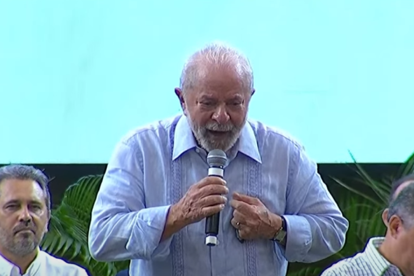

Lulaverso Diário
Noricias em tempo real Sobre MEU PRESIDENTE
Lula Anuncia Novo Imposto Sobre o Ar, Mas Garante: "Vai Ser Progressivo, Quem Respira Mais Paga Mais" , A proposta gerou reações imediatas nas redes sociais e no meio político. Parlamentares da oposição classificaram a iniciativa como "um atentado contra a liberdade de respirar", enquanto economistas debatem a viabilidade de sua aplicação prática.
Em um anúncio surpreendente na manhã desta sexta-feira, o presidente Luiz Inácio Lula da Silva apresentou uma nova proposta tributária que promete dividir opiniões: a criação do Imposto sobre a Respiração (ISR). Segundo o governo, a medida tem como objetivo promover justiça fiscal e ambiental, taxando os cidadãos de acordo com seu consumo de oxigênio. "É uma política progressiva. Quem respira mais, paga mais. Assim, garantimos que os recursos arrecadados possam ser reinvestidos em áreas essenciais, como saúde, educação e reflorestamento", declarou Lula durante coletiva de imprensa no Palácio do Planalto.
Como Vai Funcionar o Imposto?
De acordo com informações do Ministério da Fazenda, o ISR será cobrado de forma proporcional ao volume de ar inalado por cada indivíduo. Para isso, um novo sistema de monitoramento será implementado, possivelmente utilizando sensores instalados em locais públicos e dispositivos portáteis distribuídos à população. A tabela de cobrança será progressiva, com categorias que variam de "Respiradores Leves" a "Hiperventiladores Profissionais". Pessoas que praticam esportes aeróbicos e atividades que exijam maior consumo de oxigênio podem ser tributadas em faixas superiores.
Reações à Medida
A proposta gerou reações imediatas nas redes sociais e no meio político. Parlamentares da oposição classificaram a iniciativa como "um atentado contra a liberdade de respirar", enquanto economistas debatem a viabilidade de sua aplicação prática. O influenciador e empresário Ricardo Souza criticou a ideia: "Primeiro, taxaram os combustíveis. Depois, os alimentos. Agora, até o ar que respiramos? Isso é um absurdo!". Por outro lado, ambientalistas veem a medida como uma forma criativa de incentivar a redução da poluição e o plantio de árvores. "Se os recursos forem utilizados corretamente, poderemos reverter parte dos danos causados pelo desmatamento", afirmou Marina Duarte, especialista em sustentabilidade.
O Que Vem a Seguir?
O projeto será enviado ao Congresso Nacional para análise e votação. Caso aprovado, o ISR poderá entrar em vigor já no próximo ano. O governo estuda mecanismos para isentar grupos vulneráveis, como idosos, crianças e pessoas com condições respiratórias crônicas. Enquanto isso, cidadãos de todo o país aguardam ansiosamente por mais detalhes sobre como essa nova taxação poderá afetar seu dia a dia — e sua respiração. FAZZZ A PORRA DO L E ENGOLE O CHORO FDP